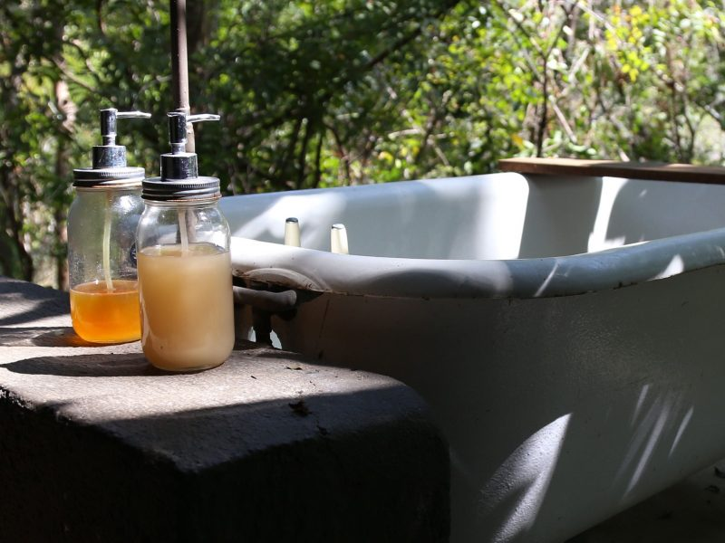

April 20, 2019
Waste Not, Want Not

Waste not, want not: Advice that stands the test of time.
If your favorite lotion or shampoo had a promotion for 10% more in the bottle, you’d be all over that, right? The truth of the matter is that the 10% extra is waiting for you in every bottle if you work for it. Here are a few tips for how to get more out of every container, meaning less to the landfill.
If the bottle has a flat top, the solution is easy: simply store the bottle upside down so that its contents will be where you need them. Particularly viscous contents can be loosened up by soaking the bottle in warm water.
Pump bottles are more challenging because they don’t stand on their heads. One option is to slice the bottle open and then use a small kitchen spatula to scoop the remaining contents into a small, wide-mouth jar. If scissors don’t do the trick, serrated bread knives work well for cutting into thick plastic.
Finally, there’s the “lotion coupler”. it’s a device that can link two screw-top bottles together, allowing (the nearly empty) one to be turned upside down on top another (new) bottle. Lotion couplers are carried by the Container Store, $4.99 for a package of three sizes.
Want to explore further? https://thekrazycouponlady.com/…/5-ingenious-ways-to-get-th…
Photo by Cecilia Medina on Unsplash